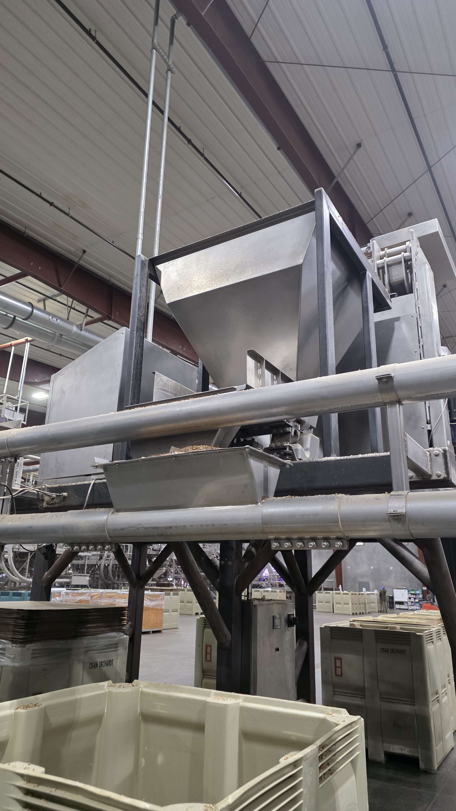

Crain Walnut Shelling
Mechanical Design Engineer — Industrial equipment improvements for high-throughput walnut processing systems.
Mechanical Design
Industrial Equipment
CAD
Fabrication
Field Engineering

Overview
Worked as a Mechanical Design Engineer supporting industrial walnut shelling operations, focusing on improving equipment reliability, reducing downtime, and supporting rapid repair and redesign cycles in a production environment.
Problem
Industrial processing equipment operates under continuous mechanical loading, leading to wear, misalignment, and recurring part failures that impact throughput and maintenance cost.
The primary challenge was improving system reliability while maintaining manufacturability and minimizing downtime during active production cycles.
Key Contributions
- Redesigned mechanical components to reduce wear and improve structural durability under cyclic loading
- Performed root cause analysis on failed components from field operation feedback
- Generated CAD models and fabrication drawings for replacement parts and improved designs
- Collaborated with technicians to validate real-world performance of design updates
- Supported rapid iteration cycles under production and time constraints
Engineering Approach
Design decisions were driven by failure analysis, manufacturability constraints, and direct field feedback from operators and maintenance teams.
- Focused on reducing failure-prone geometries and stress concentration points
- Prioritized designs that could be fabricated and deployed quickly
- Iterated designs based on observed wear patterns and operational feedback
Impact
Improved equipment reliability and reduced repeated failure modes through iterative redesign and field-validated engineering changes.
The work contributed to more stable operation of industrial processing equipment under continuous load conditions and reduced maintenance intervention frequency.